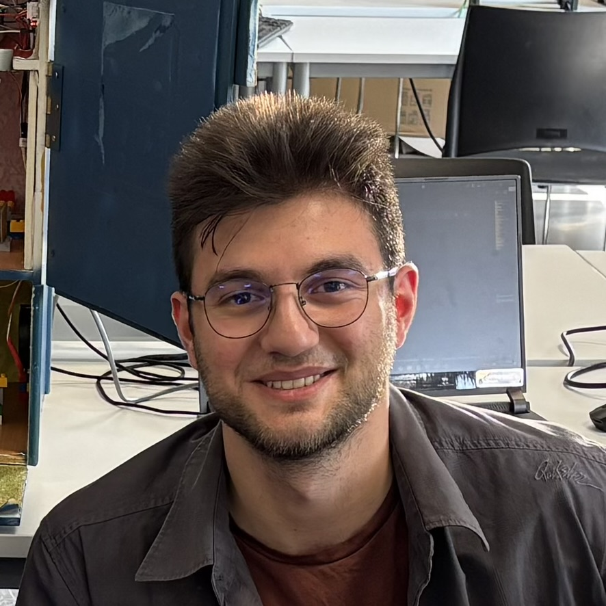

What You Can Find Here
This portfolio presents my background, selected projects, practical skills, and professional growth as a Software Developer and a versatile IT professional specializing in Data & AI.
Welcome to my Portfolio!
I'm
I am an Applied Computer Science student at Thomas More (Campus Geel). This portfolio serves as a showcase of my academic journey, highlighting the projects, experiments, and technical achievements I have completed throughout my studies.

This portfolio presents my background, selected projects, practical skills, and professional growth as a Software Developer and a versatile IT professional specializing in Data & AI.
I am expanding my knowledge across various IT domains—including software development, networking, and system architecture—while dedicating my primary focus to mastering Data and Artificial Intelligence.